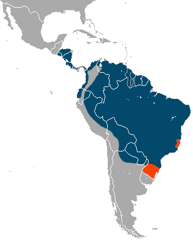

Anteaters are Large furry Animals with long snouts. Well suited to catching ants, their primary food source.

Almost all anteater species can be found in the Northeast region of South America and parts of Central America
Anteaters Can live in Rainforests and savannas, and prefer to live near lakes and rivers.